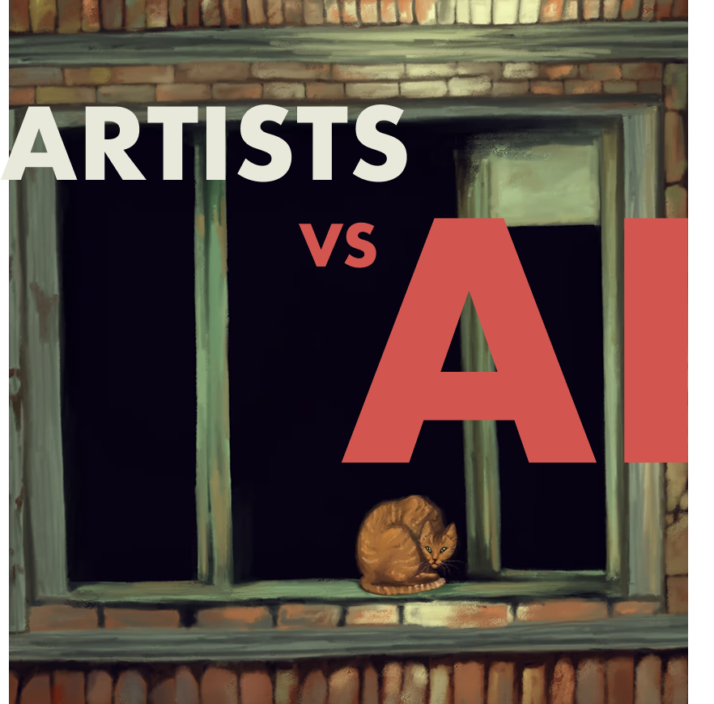
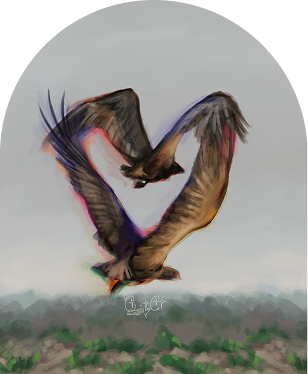
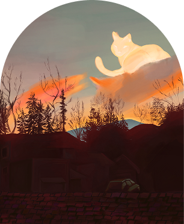

In a digital space increasingly shaped by AI...
How can we protect Instagram artists' IP?
User Centered Research & Eval team: SOYON KIM, ERICA FLORA YU, ESTHER SUH, ELISE ZUR, CHRISTY YU

Small Instagram artists original work are overshadowed by generative AI content. Many artists struggle to protect their artistic identity and deal with art theft online.
empower small Instagram artists to regain control, maintain credit, and benefit from their creativity in the age of Generative AI?

We conducted 45-60 minute contextual interviews to understand how artists feel about generative AI in various contexts. Recruitment of our participants was conducted through personal networks within the artist community.
We met with 10 small Instagram artists (under 10k followers) who have been consistently active in the past 6 months. Our sample of artists included a mix of illustrators, digital painters, animators, and mixed-media artists.

We gathered first-person narratives by prompting our participants to recall specific moments related to generative AI. Focusing on real events helped us uncover their honest emotions, behaviors, and decision-making patterns.
From our artist interviews, we accumulated 202 interpretation notes, which we then synthesized through affinity clustering. We created an empathy map and a cultural model to visualize trends and guide us to view our data from new perspectives.
What artists feel but might not consciously express.
Emotional and ethical nuances artists feel about AI.
How AI impacts their social media performance and interactions.
Hit me up!